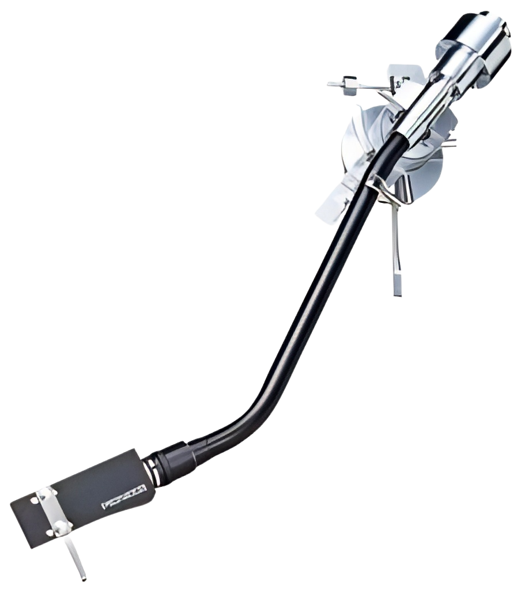
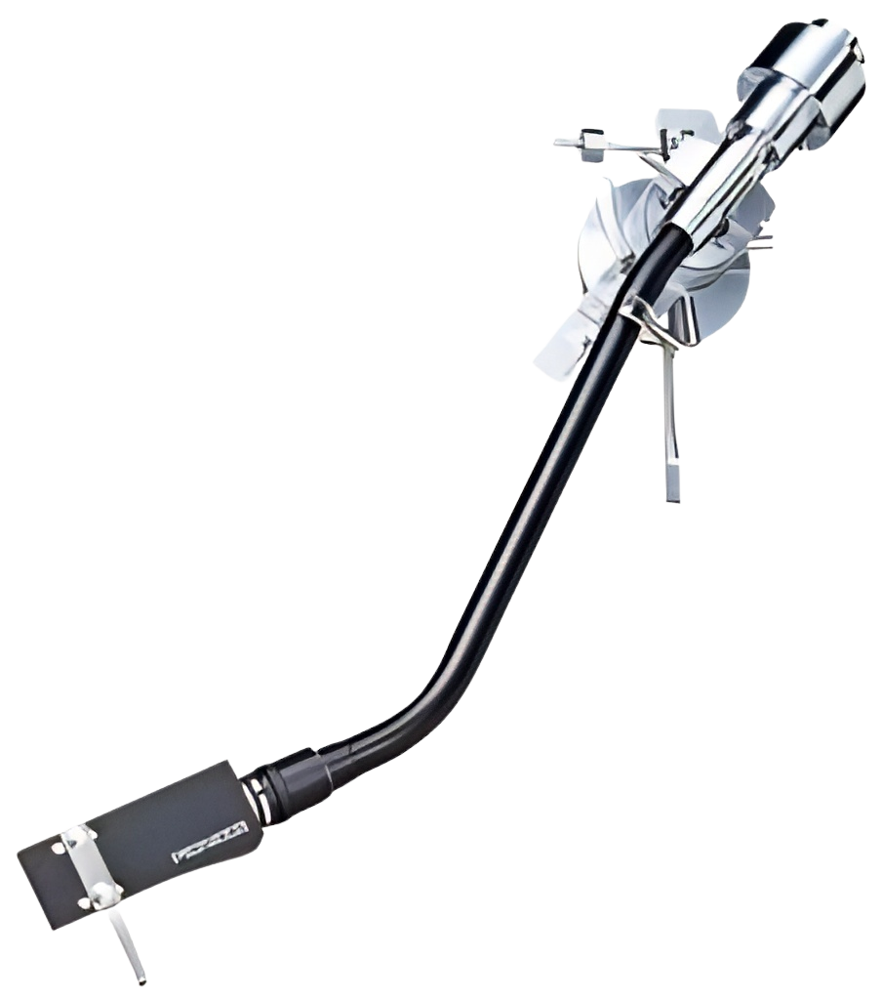

Nerves
DPR IAN
0:00
3:40
Verse 1
Hey girl, I heard you're leaving town
Hey girl, it might not matter now
Hey girl, maybe it worked somehow
That's what I tell myself
When you lie down tonight
So many times I could've held on
I still can't believe I left you alone
It tore me down to pieces, she'll never know
How much I wished I'd never let you go
Refrain
Hi, how you doing?
I heard you seem to be happy now
Hi, how you doing?
Don't worry 'bout me 'cause I'm doing fine
Verse 2
So you came around my house (Ooh-ooh)
And you left your marks with your fingertips
I'm sitting where you sat down (Ooh-ooh)
And now he's looking for something meaningless
Chorus
I'm getting, getting little nervous (Nervous)
I'm getting, getting to the surface (Surface)
I'm getting, getting little nervous (Nervous)
I'm getting, getting to the surface (Surface)
Refrain
Hi, how you doing?
I heard you seem to be happy now
Hi, how you doing?
Don't worry about me 'cause I'm doing fine
Pre-Chorus
I'm doing fine, I'm doing fine
I'm doing fine, I'm doing fine
I'm doing fine, I'm doing fine
I'm doing fine, I'm doing fine
I'm doing fine, girl, I'm doing fine
I'm doing fine, I swear it's not a lie
I'm doing fine, girl, I'm doing fine
I'm doing fine, I swear it's not a lie
Chorus
I'm getting, getting little nervous (Nervous)
I'm getting, getting to the surface (Surface)
I'm getting, getting little nervous (Nervous)
I'm getting, getting to the surface (Surface)
Bridge
He's getting little nervous
She's getting to the surface
You got a little nervous of running back to you
When you weren't there
Outro
And I'm sorry
I was hurting too much to know
That you were standing right there
And I'm sorry
I'll sing this song to you
To tell you I really cared
And I'm sorry
When I left you all alone
Girl, I know that wasn't fair
'Cause I loved you
He loved you, he loved you
DPR IAN's song 'Nerves' is a poignant reflection on the aftermath of a relationship that has ended. The lyrics convey a sense of regret and longing, as the protagonist reminisces about a past lover who is moving on. The repeated inquiries, 'Hey girl, I heard you're leaving town,' suggest a distance that has grown between the two, both physically and emotionally. The protagonist is trying to convince himself that the breakup might have been for the best, but his true feelings seep through as he admits to the pain of letting go and the wish that he had never done so.
What did DPR IAN say about "Nerves"?
I wanted to keep it very raw, emotion-wise, video-wise. The video, I wanted that to kinda show
where all this thing escalated to. A lot of people think it's through a heartbreak that MITO
came about. It's essentially one of the things that triggered his chaotic path to becoming MITO
but it's not 'the' trigger. Through a lot of relationship you're gonna understand it, but not
just a relationship with your girlfriend, but it could also mean a relationship with your
friends, your family and most importantly yourself. It's through a lot of the decisions you make
because of the neglect that you give to the love, to your family, friends, yourself, that you
find yourself in a very turbulent and chaotic scenario. The video shows a lot of distant
memories, but in general what it is showing the moments leading up to the decision of becoming
MITO. It's very hitting on the idea that a lot of people, especially after a heartbreak or a
turbulent fight with somebody they love, or even themselves, they decide to change, to go down
and getting stronger and tough through resentment. Tough love, right?
—DPR IAN via Instagram Live
Who wrote “Nerves” by DPR IAN?
“Nerves” by DPR IAN was written by DPR CREAM & DPR IAN.
Movie Teaser
Nerves
DPR IAN
 

Comments